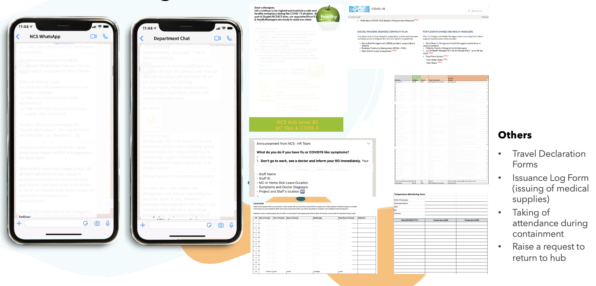
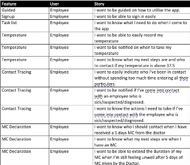
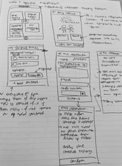
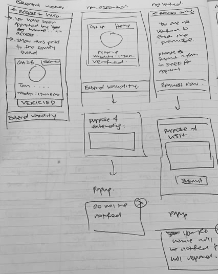
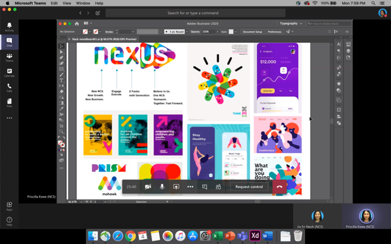

The Journey
DISCOVER
First, we had to think of existing problems that could use a solution (that's good enough for a hackathon). We had a few ideas on the table, but ultimately we decided to work on an issue faced by NCS employees.
Due to COVID-19, NCS is scrambling together ways to disseminate information quickly to employees while trying to obtain as much information as they can. As employees, sometimes we will feel overwhelmed with the amount of information required to be processed.
Here's what we are talking about:

- Subscribing to NCS's WhatsApp chat to get information on COVID-19
- Our very own Department WhatsApp chat that disseminates similar information
- Our very own Team WhatsApp chat that sends similar information (or forwarded information from the above 2 channels
- Lots of chats and emails on the chain of command like who we should contact if we are feeling unwell and what we should do next. For example, Staff to report to Reporting Officers as well as Health Managers. Health Managers to report to Floor ICs who will then report to the higher management, who will report to other higher management (you get my point...)
- We are also sent contact tracing forms (in excel), temperature taking forms (in excel), travel declaration form (in email), raise a request to return to office (in email) and the list goes on.
It is so difficult to search for information as we can not remember where we received it from.
REFRAME
Our Problem: How might we allow NCS Staff to perform the necessary measures needed to be taken for COVID-19 in a more effective (retaining information and achieving the same outcome with less effort) and organised manner?
Our Solution: A one-stop crisis management (for contagious diseases) mobile application for NCS Employees to perform necessary measures needed to be taken during COVID-19.
IDEATE
For ideation, it involved us creating user stories and paper prototyping to visualize how the application should look like. With the user stories, it allowed us to prioritise the more important features necessary to make our solution valuable.

(User Stories in excel)

(Paper Prototyp)

(Paper Prototype)
We also did a moodboard to decide on the colour scheme we wanted for our mobile application. Our main inspiration came from the colours in NEXUS (on the top left hand corner of the image below). However, those colour are too bright and cheerful which was not fitting for our crisis management application. We did not want our application to look dull and mundane, hence we referenced the colours, tone it down and made it into pastel shades which gave a much softer look - yet still pleasing to the eyes.

VISUALISE
Due to the fact that we were all working from home, we made it a point to have a team call via Microsoft Teams after every agile phase so that we can showcase what we have done, answer any questions or inform each other on any findings we may have.
The video shown below is an example of how we communicated with each other.
EVALUTE
After we have linked our screens into clickable prototype, we tested with 4 participants (who are our colleagues) and observed if they had any issues trying to complete the tasks.
The video shown below is a short clip on how we conducted the Usability Testing. We provided our participants with the link to our clickable prototype and utilised Microsoft Teams to observe their behaviour.
The general feedback provided by our participants is that the user interface is clean and it was easy to perform the tasks given. However, there were some flows that we had to streamline a little more.